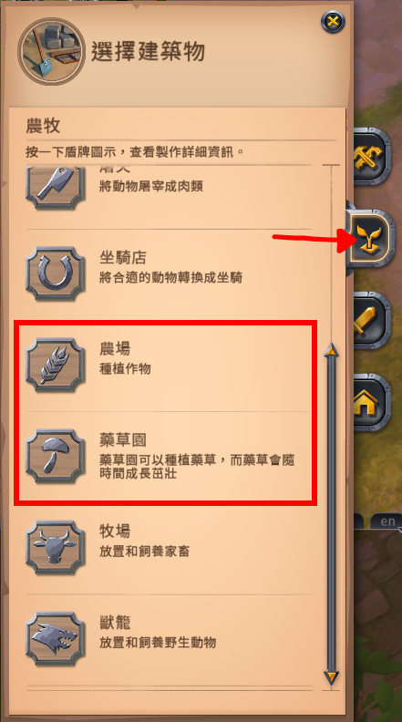
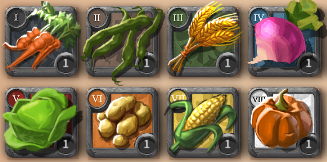

農作物種植
關於農作物的種植、澆水與收益。
農地
如果要發展農業，必須先擁有一座Lv2或更高等級的個人島。關於個人島購買請見島嶼。
點擊自己的id，開啟玩家選單，點擊建造，然後選擇農耕。

| 類型 | 建造後外觀 | 可以種植... |
| 農場 |  | |
| 藥草園 |
播種
一塊農地建好後可以種植9株作物或草藥。播種方法：
將作物/草藥種子放置在農場/藥草園裡即可。
澆水
每一種農作物，從播種到成熟的時間皆為22小時(有會員)，在此期間內只需澆一次水即可獲得澆水加成。
(剩21小時或只剩10分鐘時澆水都可)
澆水需要消耗專注點，沒有任何專精時一次需要消耗1,000專注點，
不過隨著內圈和外圈等級的提升，每次澆水所需的專注點會越來越少。
計算某個作物/藥草，單次澆水所需專注點：
內圈
等，外圈
等，澆水一次需要 ? 專注點。
澆水加成
澆水只會增加種子產量。種子產出率與澆水獲利如下表：(每株農作物, 1塊田能種9株)
| 階級 | 農作物 | 未澆水 w |
有澆水 W |
澆水加成 W-w |
種子價格 p |
平均澆水獲利 p*(W-w) |
平均種子成本 p*(1-w) |
| T1 | 胡蘿蔔 | 0% | 200% | +2 | 2,000 |
4,000 |
2,000 |
| T2 | 豌豆/秘術菌菇 | 33.33% | 166.67% | +1.333 | 3,000 |
4,000 |
2,000 |
| T3 | 小麥/明葉接骨草 | 60% | 140% | +0.8 | 5,000 |
4,000 |
2,000 |
| T4 | 蕪菁/鈍齒牛蒡 | 73.33% | 126.67% | +0.5333 | 7,500 |
4,000 |
2,000 |
| T5 | 白菜/龍川續斷 | 80% | 120% | +0.4 | 10,000 |
4,000 |
2,000 |
| T6 | 馬鈴薯/迷幻毛地黃 | 86.67% | 113.33% | +0.2667 | 15,000 |
4,000 |
2,000 |
| T7 | 玉米/火吻毛蕊花 | 91.11% | 108.89% | +0.1778 | 22,500 |
4,000 |
2,000 |
| T8 | 南瓜/食屍鬼鋸草 | 93.33% | 106.67% | +0.1333 | 30,000 |
4,000 |
2,000 |
- 種子產出率如果為 120% 代表： 100% 產出 1 個種子，有 20% 的機率額外再產出 1 個種子。
- 澆水加成 W-w 可以理解為，澆水後每株平均會多產出 n 個種子。
- 種子價格 p 未考慮全局折扣。
商城的種子價格可能會比農業商人略為便宜。(兩者選便宜的買)
由上表可知，無論你種什麼東西，每株澆水後的種子平均獲利皆為
4,000
。
每株平均能採收9個農作物，那麼1個農作物的種子成本為
由於2022/11/21更新的雲中煙霞1補丁，製藥加成由紅城移至迷霧城，2,000 /9 ~ 222.22
/9 ~ 222.22
。
造成大量農夫在市場上拋售種子，價格暴跌。
上述報價為理想情況，真實情況請參照頁面最下方的計算機。
收成
每一種農作物採收後的產物數量和種植聲望皆相同。每一株作物採收後可獲得：
| 產物 | 無會員 | 有會員 |
| 農作物 | 3~6 | 6~12 (2倍) |
| 種子 | 0~2 | 0~2 (不影響) |
| 蚯蚓 | 0~1 | 0~2 (2倍) |
| 種植聲望 | 100 |
150 (1.5倍)
|
收益
如果沒會員，種田很可能會100%虧錢。種田的收益其實與"種哪種農作物"無關，因為無論種植哪一種，種子成本皆相同。(理想情況)
要達到最高收益，就挑市場上最高價的來種。
注意：以下收益計算為"平均"收益，實際收益可能會因運氣成分而有誤差。
種田收益計算：(有會員、不含澆水/蚯蚓的收益、一天採收一次)
種植
，種子價格
 ，農地
塊，
，農地
塊，
每個農作物市場賣價
 ，稅率
%。
，稅率
%。
每日收益為
?
。
澆水收益計算：(買會員來澆水、不含挑戰者獎勵收益)
種植
，種子價格
 ，澆一次水需要
專注點，
，澆一次水需要
專注點，
每天平均花費
專注點在澆水上，會員一個月
 。
。
每日收益為
?
。
種田的總利潤即為 種田收益+澆水收益。
編輯紀錄
作者: runnywolf
最後編輯日期: 2023/4/13